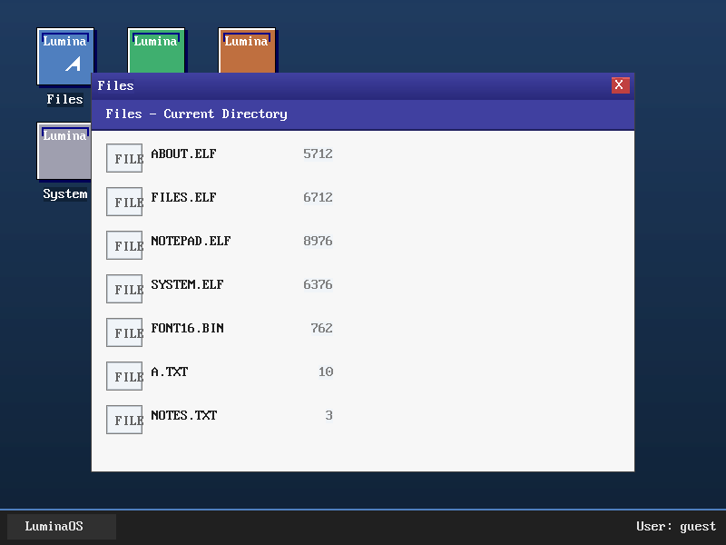
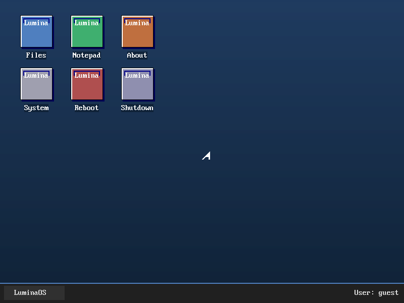

A hobby operating system for x86-64 built from scratch — bootloader, kernel, desktop, and ELF64 apps.
View on GitHub Build NowBoots a 1.44 MB floppy straight into 64-bit long mode.
Physical memory manager with paging support.
VBE graphics (800x600) with a windowed desktop, icons, and mouse support.
Full FAT16 support on IDE disk images.
Run user-space apps compiled to ELF64 in ring 3, loaded by the kernel.
Notepad, Files, About, System — ready to use.

Notepad

Desktop
NASM x86_64-elf-gcc QEMUgit clone https://github.com/Lumina-hc/LuminaOS.gitcd LuminaOS.\build.ps1.\run.ps1